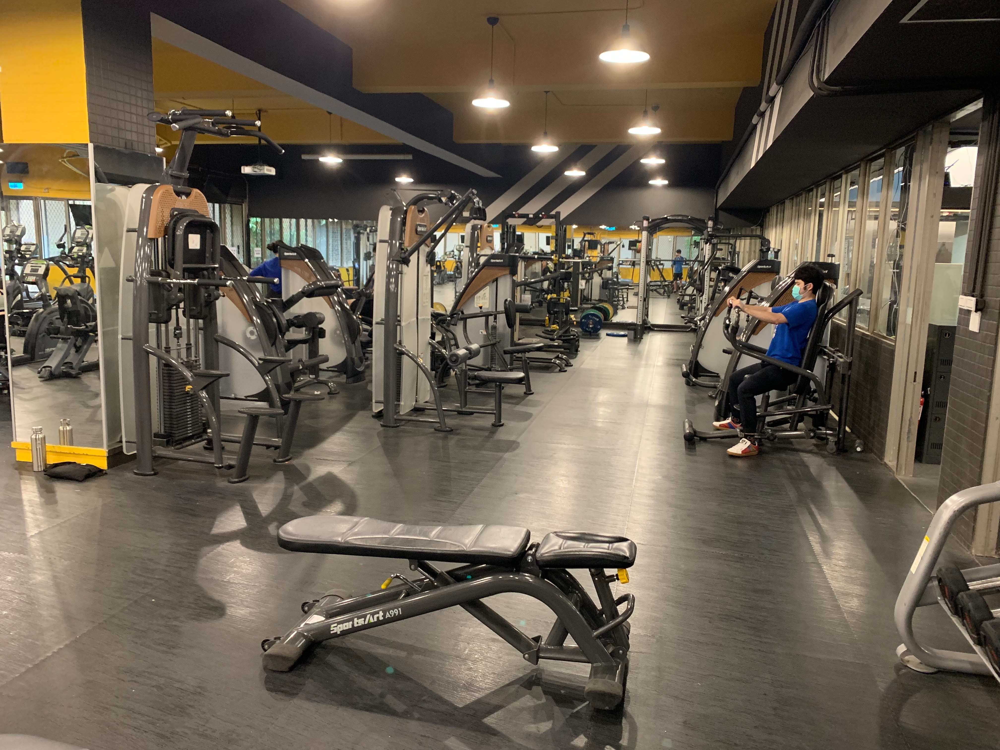
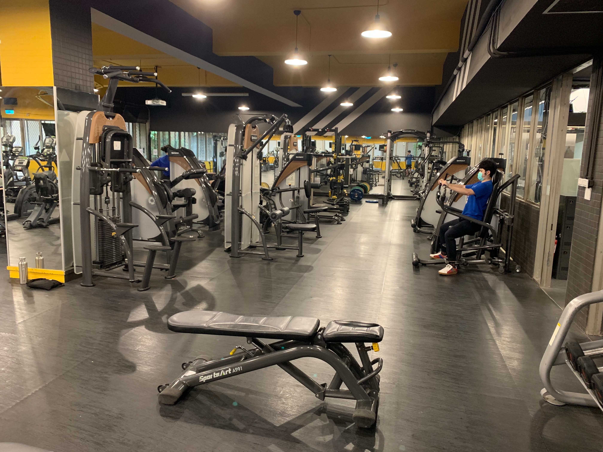
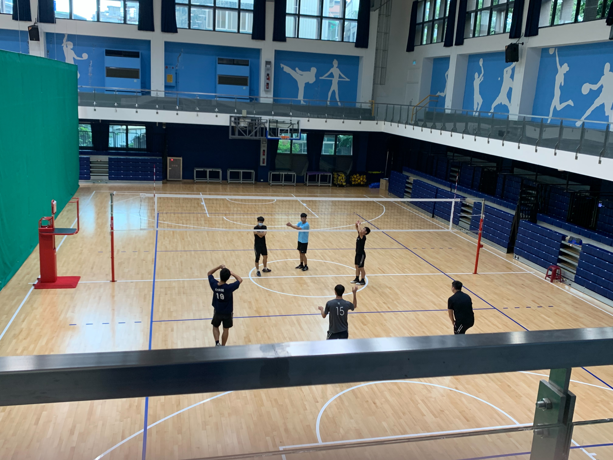
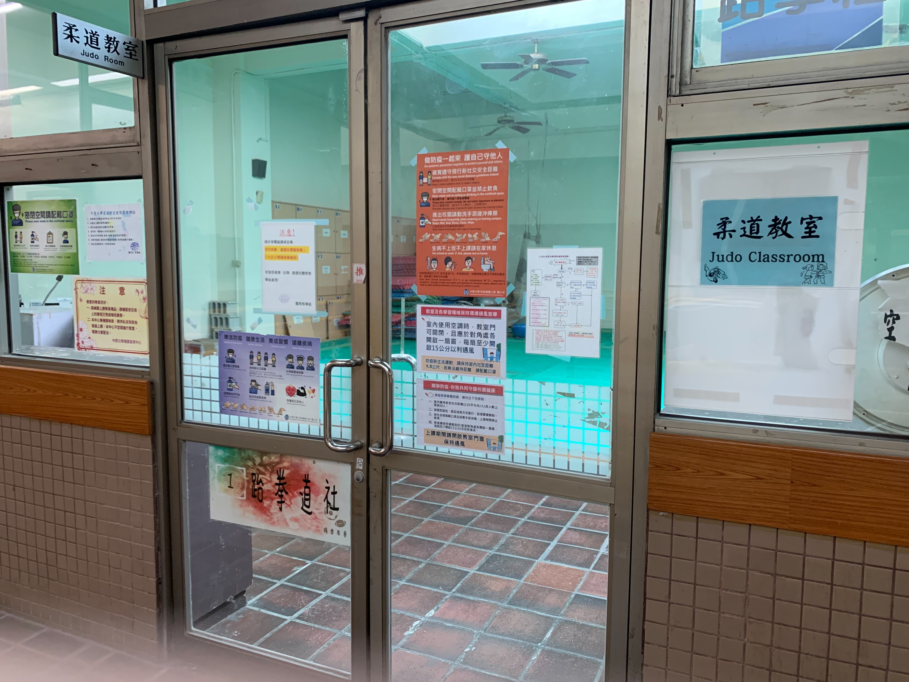
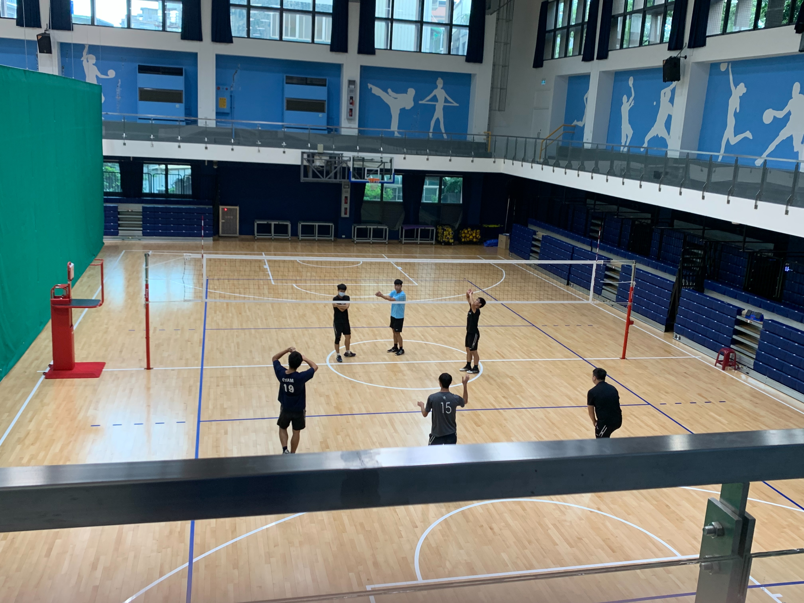
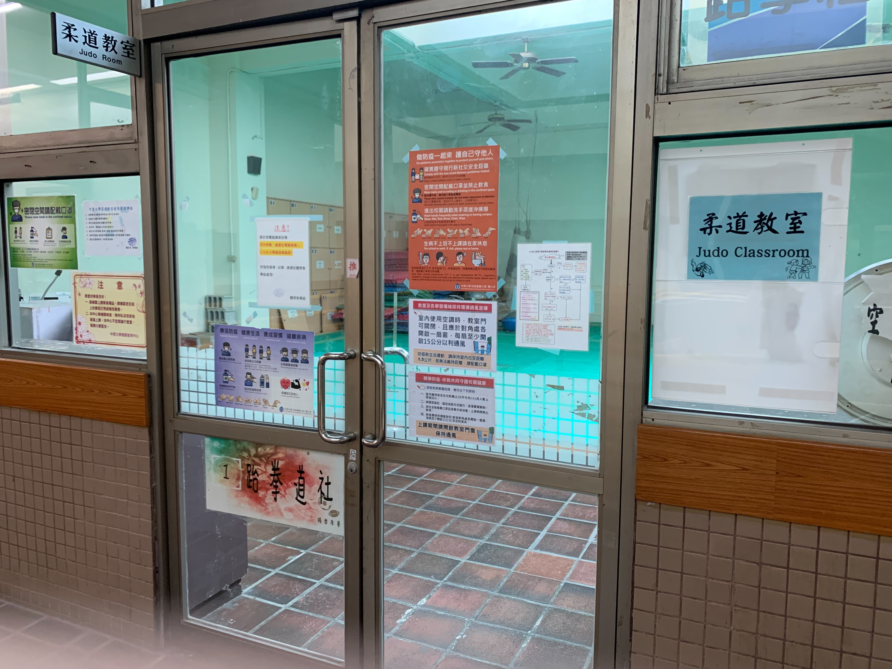
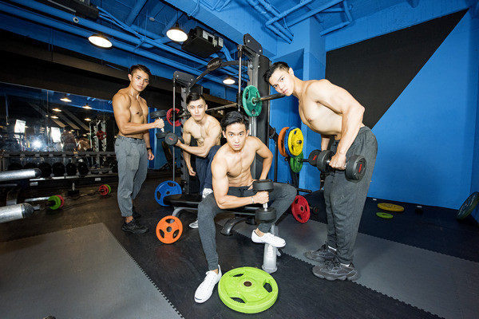
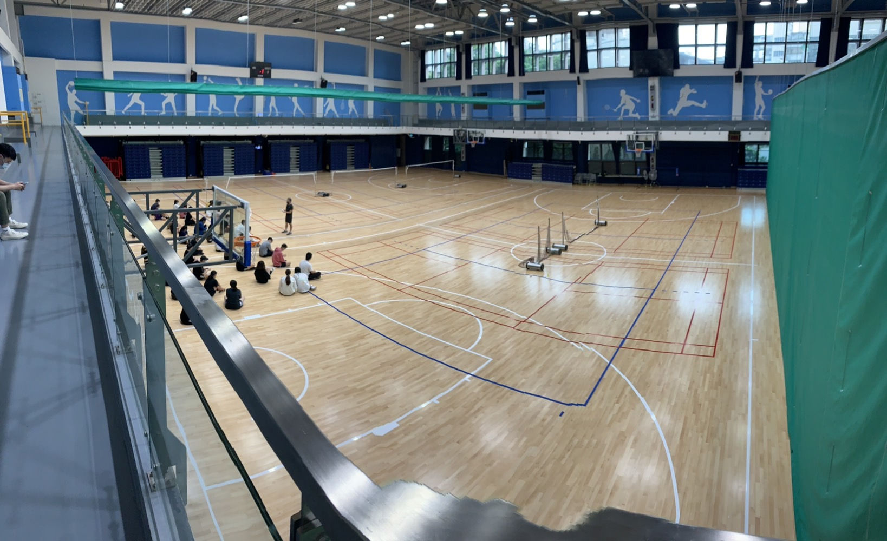
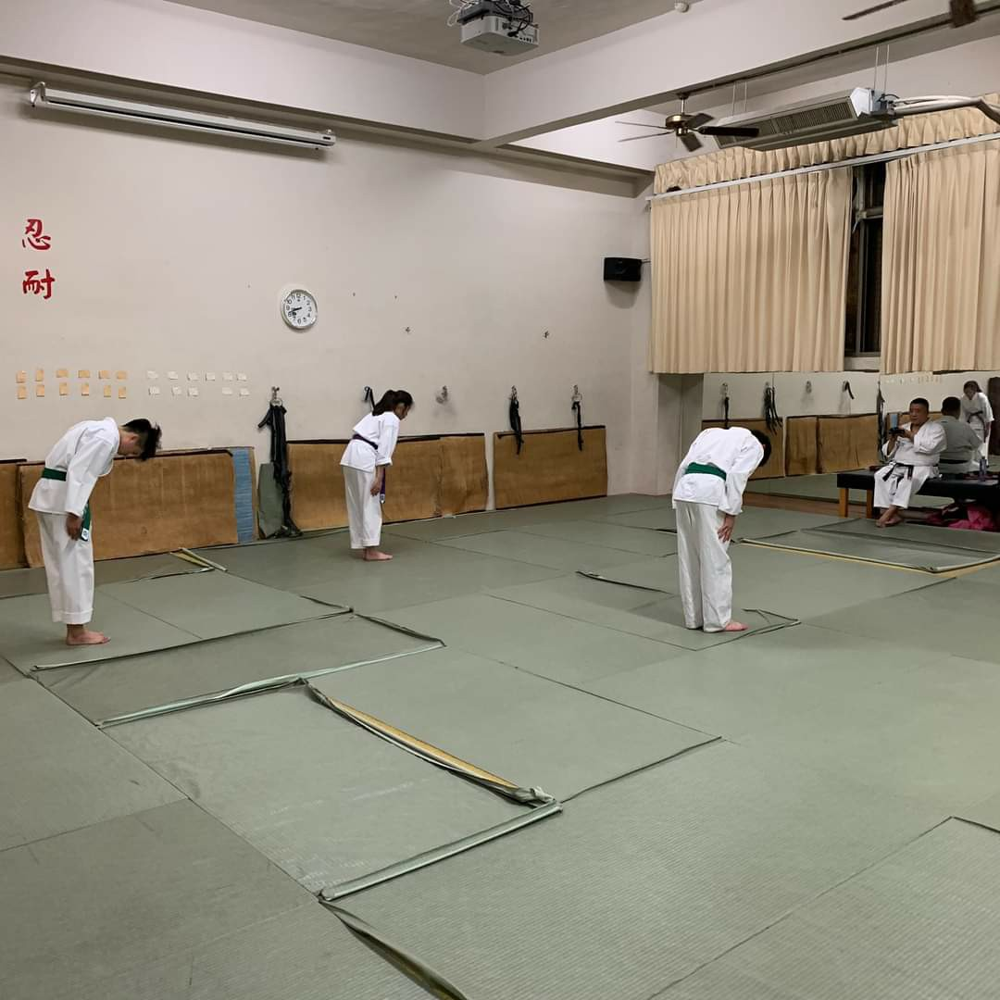

中原體育館
設施介紹
 

 



中原大學體育館，位於中原大學體育運動園區。本館球場40M＊60M，可容納三座籃球場，正式比賽時則改為一座球場及800人之觀眾席。另附球場一座，以排球及非正式之網球練習為主，並設有視聽教室、韻律室、柔道室、桌球及重量訓練室，體運組辦公室100坪及浴廁更衣室等服務空間。體育館由地上兩層地下一層組成，總地板面積7450平方公尺，於1989年10月竣工。2020年九月針對室內結構和老舊球場進行整修並於2021年十月完成整修。

游泳館
中原游泳館，地板總面積3130平方公尺，於1991年5月竣工。位於中原體育園區，體育館右側。興建一奧運標準之室內游泳池，池內有水道8條長50M，提供游泳教學及正式比賽使用。可容納觀眾400～600席，由於泳池一面臨校外道路，故僅開高窗，泳池兩端以大玻璃面配合池邊教學活動及休息空間，並以天窗採光。

健身房
中原健身房，位於中原體育館地下1樓，健身場地非常寬敞，除了基本的啞鈴，跑步機之外，學校也引進許多專業的健身器材，像是Smith機器、橢圓交叉機、舉重板和飛輪等等...在進入健身房前學校也設置置物櫃供學生暫時擺放球鞋、運動用品，並於場內外加裝監視器保障學生個人財產，以防物品遭竊，出入場則採用證件辨識系統加強管理，讓學生可以無慮自在地享受運動。

桌球室
桌球室位於中原體育館一樓體運組辦公室旁，室內空間寬敞，共擁有有11張球桌。除了平時上課使用外，在休息時間也開放學生自由使用。

排球場
室內排球場，位於中原體育場一樓主球場區內，有1座正式球場和4座練習球場供學生使用。在這次整修中也將主球館的舊地板更換為新的木製地板，除了保障學生的運動安全外，也讓球館看起來更加明亮。

柔道教室
柔道教室，位於中原體育館2樓，教室的地板由多張軟墊拼合而成。目前做為上課教學和空手道社的社團教室使用，平時未對外開放。

Know More About
Search:
Chung Yuan Christian University Office of Physical Education